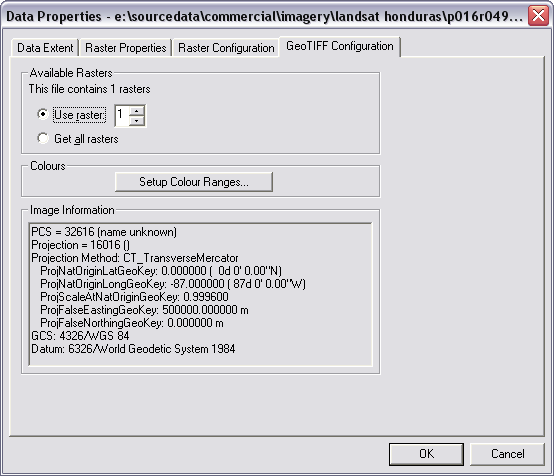
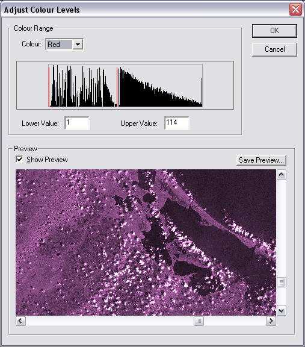

|
MapLink Pro Studio 11.1
|
|
MapLink Pro Studio 11.1
|
GeoTIFF is a standard Tagged Image File Format, version 6, which contains a set of TIFF Tags defining geographic position in lat/lon or a grid system, and a description of the coordinate system used.
GeoTIFF data can be read by most standard TIFF readers, for example Photoshop or Paintshop Pro, however MapLink Pro not only reads the TIFF image itself, but it can use the spatial information to automatically reference the data. MapLink Pro Studio supports GeoTIFF that does not contain LZW compressed data, but does support 12 or 24 bit colour images (such as those produced by Digital Globe ©).
MapLink Pro Studio reads the GeoTags to establish the coordinate system that the image is in. This must be one of the supported MapLink Pro Coordinate Systems. The image can also be in geographical coordinates (lat/lon) using WGS84. The user can override the coordinates by manually setting the MapLink Input Coordinate Scheme for the dataset.
As each GeoTIFF file may contain more than one raster the Format Configuration panel is used to select which raster to use. The geo-referencing information contained within the GeoTIFF file is also displayed.
The panel also allows access to colour correction options via the of the ‘Setup Colour Ranges’ button. The panel then displayed ‘Adjust Colour Levels’ allows the dynamic range (minimum and maximum colour value) to be selected for each colour. The resulting colour corrected image can also be viewed as a thumbnail or saved.
Links: